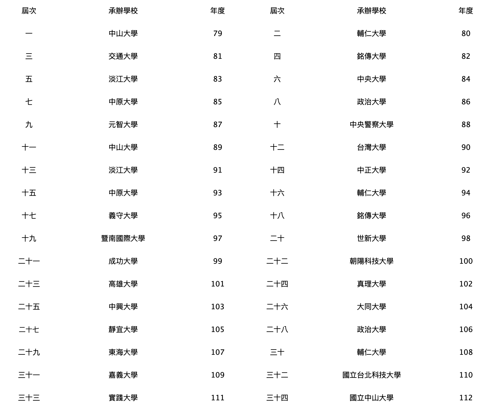
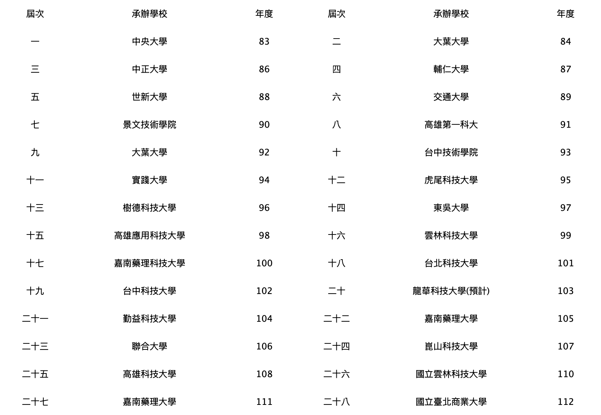
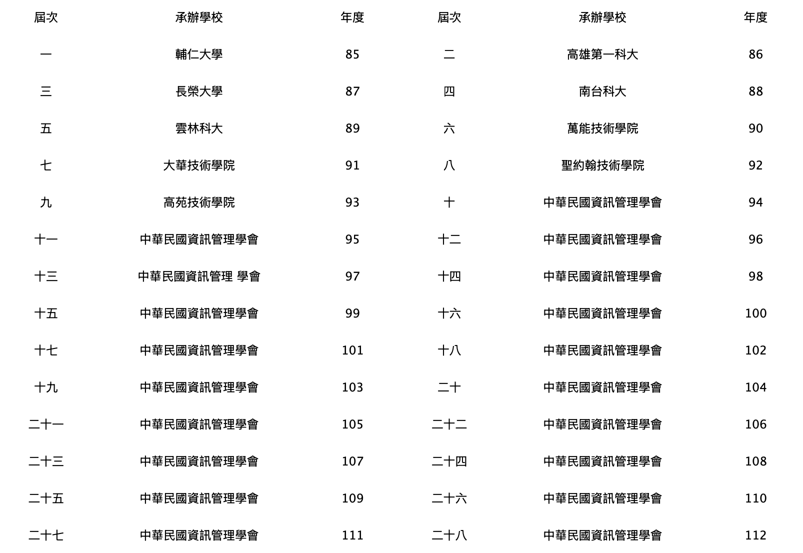
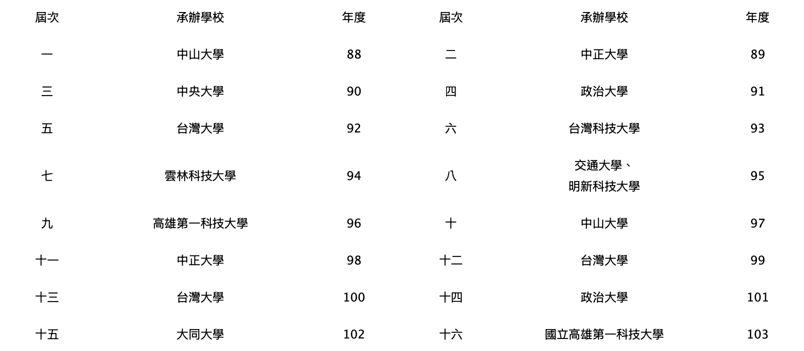
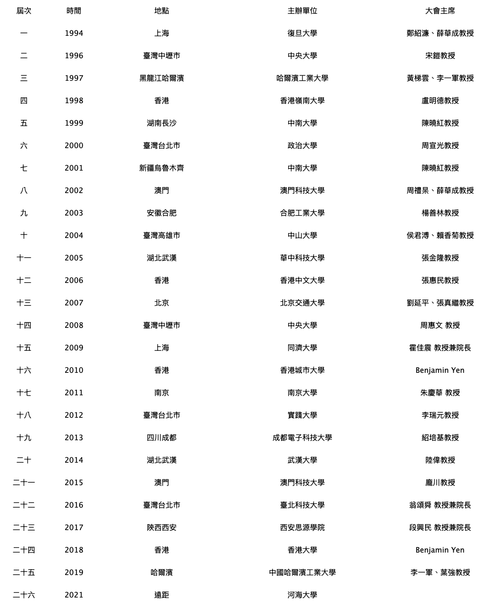

學會簡介
本學會成立於民國九十年，以促進學術研究、提升學術水準、
推動學術交流及服務社會為宗旨。
本會結合國內外學術資源，舉辦各類學術研討會、專題演講與研究計畫，
致力於營造優質的學術環境。
簡介
● 中華民國資訊管理學會成立於民國 79年，係集合群國大專院校資訊管理學門之學者專家與部分資訊業界之精英組合而成。
● 為內政部登記的學術研究性社團法人。學會主要成員是全國所有資訊管理系教授。
● 全國大專院校中，計有119所資訊管理系所。
● 全國大專院校資訊管理學系每年約有 2萬多名畢業生。
宗旨
● 本會之宗旨為促進資訊管理學術之研究發展，推廣資訊管理學術之實務應用，整合資訊管理學術之理論及實務，與提昇資訊管理學域之教育水準。
願景
● 使資管學會成為最具活力及影響力的學術團體。
● 強化資訊管理學域之可視度，提升資管人才的學術，專技與產學互動達到最優良的品質。
任務
● 從事資訊管理學術及實務之整合研究；
● 舉辦及參加國內外資訊管理之相關學術會議及活動；
● 建議資訊管理之課程架構；
● 辦理資訊管理進修教育；
● 發行期刊及著譯叢書；
● 接受政府及民間之委託，辦理與資訊管理之相關研究、諮詢與服務；
● 符合本會宗旨之其他事項。
● 《79~80 年》第一屆 中央大學資訊管理系 宋鎧 教授
● 《80~82 年》第二屆 中央大學資訊管理系 宋鎧 教授
● 《82~84 年》第三屆 中央大學資訊管理系 范錚強 教授
● 《84~86 年》第四屆 中央大學資訊管理系 范錚強 教授
● 《86~88 年》第五屆 元智工學院資訊學院 鄭鳳生 教授
● 《88~90 年》第六屆 政治大學資訊管理系 周宣光 教授
● 《90~92 年》第七屆 政治大學資訊管理系 周宣光 教授
● 《92~94 年》第八屆 淡江大學資訊管理系 黃明達 教授
● 《94~96 年》第九屆 淡江大學資訊管理系 黃明達 教授
● 《96~98 年》第十屆 輔仁大學資訊管理系 楊銘賢 教授
● 《98~100 年》第十一屆 輔仁大學資訊管理系 楊銘賢 教授
● 《100~102 年》第十二屆 台灣大學工管系 游張松 教授
● 《102~104 年》第十三屆 台灣大學工管系 游張松 教授
● 《104~106 年》第十四屆 臺北科技大學資訊與財金管理系 翁頌舜 教授
● 《106~108年》第十五屆 臺北科技大學資訊與財金管理系 翁頌舜 教授
● 《108~110年》第十六屆 中正大學資訊管理學系暨研究所 廖則竣 教授
● 《110~112年》第十七屆 銘傳大學資訊管理學系暨研究所 廖則竣 教授
● 《112~至今》第十八屆 淡江大學資訊管理學系 蕭瑞祥 教授兼總務長
學會除透過十二個委員會推動會務外，學會之常態活動計有：
1. 國際資訊管理學術研討會 (CSIM ICIM)：
已舉辦三十四屆。最近幾年，研討會的投稿論文已成長到400~500篇，錄取率約50~60%，參與盛會的各界人士近800人。
2. 資訊管理暨實務研討會 (CSIM IMP)：
已舉辦二十八屆。最近幾年，研討會的投稿論文已成長到350~400篇，錄取率約60~70%，參與盛會的各界人士近600人。
3. 全國大專院校資訊服務創新競賽暨資訊管理專題競賽：
已舉辦二十八屆。於111年，參賽的各校校隊隊數已達250隊。
4. 海峽兩岸資訊管理發展與策略學術研討會(每年八月份舉行)
已舉辦二十六屆。最近幾年，兩岸三地投稿論文約120~250篇(台灣、大陸、港澳三地，四年為週期輪流主辦，亦即兩年在大陸，一年在台灣，一年在港澳的模式舉行)，大陸地區參與人數約100人致150人，台灣參與人數約50人~150人不等。
1. 國際資訊管理學術研討會暨資管學會年會 （每年的五月份舉行）

2. 國際資訊管理研究暨實務研討會(每年十二月份舉行) （每年的五月份舉行）

3. 全國大專院校資訊管理專題競賽(每年十二月份舉行)

4. 全國資管博士生學術交流研討會 (每年四月份舉行)

5. 海峽兩岸資訊管理發展與策略學術研討會(每年八月份舉行)

中華民國資訊管理學會章程
八十四年度會員大會修訂
99.5.22第十一屆第二次會員大會修訂通過
102.5.25第十二屆第二次會員代表大會新訂通過
第一章 總則
第一條、本會訂名為「中華民國資訊管理學會」(以下簡稱本會)。
第二條、本會為依據人民團體法設立之社會團體非以營利為目的。本會之宗旨為促進資訊管理學術之研究發展，推廣資訊管理學術之實務應用，整合資訊管理學術之理論與實務，與提昇資訊管理學術之教育水準。
第三條、本會以全國行政區域為組織區域。
第四條、本會之會址設於主管機關所在地區並得報經主管機關核准設辦事處。
第五條、本會之任務如下
一、從事資訊管理學術及實務之整合研究;
二、舉辦及參加國內外資訊管理之相關學術會議及活動;
三、建議資訊管理之課程架構;
四、辦理資訊管理進修教育;
五、發行期刊及著譯叢書;
六、接受政府及民間之委託辦理與資訊管理之相關研究諮詢與服務;
七、符合本會宗旨之其他事項。
第六條、本會之主管機關為內政部。目的事業主管機關為教育部，其目的事業應受各該事業主管機關之指導及監督。
第二章 會員
第七條、本會會員如下
一、個人會員
1、一般會員，凡年滿二十歲認同本會宗旨者均可申請入會，經理事會審查通過者得為一般會員。
２、正會員，凡合乎下列條件之一經正會員一人之推薦，並經審查合格由本會理事會通過後得為本會正會員。
(1)國內各大專院校講師(含以上或在研究發展機構任相當職務者) 。
(2)國內外資訊管理或相關研究所畢業或研究所修 *年以上並有論文公開發表者。
(3)政府或公民營企業擔任資訊管理或其他主管職務 *年以上者
(4)為本會一般會員三年以上並有傑出表現者。
二、學生會員：各大專院校在校學生，經理事會審查通過得加入本會為學生會員。
三、團體會員：凡國內外工商企業或學術機構，經正會員一人以上之推薦並經本會理事會通過後得為團體會員，並得推派代表一人享有正會員權利。
四、贊助會員：捐助本會之個人或團體，並經本會理事會通過後得為本會贊助會員。
五、榮譽會員：由理事會推薦頒贈。
第八條、會員有遵守本會章程決議及繳納會費之義務。
第九條、會員有違反法令章程、連續兩年未繳會費、或不遵守會員(會員代表)大會決議者，得經理事會決議予以警告或停權處分。其危害團體情節重大者，得經會員大會決議予以除名。會員有下列情事之一者為出會：
1.死亡。
2.喪失會員資格。
3.經會員大會決議除名者。
第十條、會員得以書面並敘明理由向本會聲明退會。
第十一條、會員經除名或退會以繳納之各項費用不予退還。
第十二條、正會員及團體會員所派代表，有表決權、選舉權、被選舉權與罷免權。其他會員僅有列席會員(會員代表)大會之權利，每一正會員為一權。
第十三條、會員之入會程序及會籍變更相關辦法另訂之。
第三章 組織及職權
第十四條、本會以會員(會員代表)大會為最高權力機構，會員(會員代表)大會閉會期間，由理事會代行職權。監事會為監察機構。本會個人會員人數超過三百人以上時得按分區比例選出會員代表，再召開會員代表大會，行使會員大會職權。本會會員代表，依本會個人會員人數比例選出，任期二年，連選得連任。會員代表選舉辦法另訂之。
第十五條、會員(會員代表)大會之職權如下：
一、訂定與變更章程。
二、選舉或罷免理事監事。
三、議決入會費、常年會費、事業費及會員捐款之數額及方式。
四、議決年度工作計劃報告及預算決算。
五、議決會員(會員代表)之除名處分。
六、議決財產之處分。
七、議決團體之解散。
八、與會員之權利義務有關之其他重大事項之議決。
第十六條、本會置理事二十一人、監事七人，由會員(會員代表)選舉之，分別成立理事會與監事會。選舉前項理事監事時，同時選出候補理事七人，候補監事二人。理事、監事得採用通訊選舉，但不得連續辦理。通訊選舉辦法由理事會通過，報請主管機關核備後行之。
第十七條、理事會之職權如下
一、議決會員(會員代表)大會之召開事項。
二、審定會員(會員代表)之資格。
三、選舉或罷免常務理事理事長。
四、議決理事、常務理事或理事長之辭職。
五、聘免工作人員。
六、擬定年度工作計劃報告及預算決算。
七、其他應執行事項。
第十八條、理事會置常務理事七人，由理事互選之，並由理事就常務理事中選舉一人為理事長。理事長對內綜理督導會務，對外代表本會，並擔任會員(會員代表)大會，理事會主席。理事長應視會務需要到會辦公，其因事不能執行職務時應指定常務理事一人代理之，不能指定時由常務理事互推一人代理之。
一、監察理事會工作之執行。
二、審核年度決算。
三、選舉或罷免常務監事。
四、議決監事或常務監事之辭職。
五、其他應監察事項。
第二十條、監事會置常務監事乙人，由監事互選之，監查日常會務並擔任監事會主席。
第二十一條、理事、監事之任期二年，連選得連任，理事長之連任以一次為限。
理事、監事之任期自召開本屆第一次理事會之日起計算。
第二十二條、理事監事有下列情事之一者應即解任：
一、喪失會員(代表會員)資格者。
二、因故辭職經理事會或監事會議決通過者。
三、被罷免或撤免者。
四、受停權處分其間逾任期二分之一者。
第二十三條、本會置秘書長一人，處理本會事務，其他工作人員若干人，均由理事長提名經理事會通過後聘免之，並報主管機關備查。但秘書長之解聘應先報主管機關核備。
第二十四條、本會理監事不得兼任工作人員。
第二十五條、本會得設各種委員會或小組，其組織簡則由理事會擬定，報經主管機關核備後實行，變更時亦同。
第二十六條、本會得設榮譽理事長若干名，由理事會提名，經會員(會員代表)大會通過聘請之。
第二十七條、本會得設榮譽理事及顧問若干人，其聘期與理事、監事之任期同。榮譽理事為曾任三屆以上之理監事，由理事長徵求同意提名之，經理事會通過聘任 (榮譽理事不得超過理事名額，顧問不得超過理事名額之三分之一) 。
第四章 會議
第二十八條、會員(會員代表)大會分定期會議與臨時會議兩種，由理事長召集，召集時除緊急事故之臨時會議外應於十五日前以書面通知之。定期會議每年召開一次，臨時會議於理事會認為必要，或經會員（會員代表）十分之一以上之請求，或監事會函請召集時召開之。
第二十九條、會員(會員代表)不能親自出席會員(會員代表)大會時，得以書面委託其他會員(會員代表)代理，每一會員(會員代表)以代理一人為限。
第三十條、會員(會員代表)大會之決議，以會員(會員代表)過半數之出席，出席人數過半數或較多數之同意行之，但章程之訂定與變更以出席人數四分之三以上之同意或全體會員三分之二以上書面之同意行之。本會之解散，得隨時以全體會員三分之二以上之可決解散之。下列事項之決議以出席人數三分之二以上同意行之：
一、會員(會員代表)之除名;
二、理事監事之罷免;
三、財產之處分;
四、其他與會員權利義務有關之重大事項。
第三十一條、理事會每三個月召開一次，監事會每六個月召開一次，必要時得召開聯席會議或臨時會議。
前項會議召集時，除臨時會議外，應於七日前以書面通知。會議之決議各以理事監事過半數之出席，出席人數過半數或較多數之同意行之。
第三十二條、理事監事應出席理事監事會議，理事會監事會不得委託出席。理事監事連續兩次無故缺席理事會監事會者，視同辭職。
第五章 經費及會計
第三十三條、會經費來源如下
一、入會費：各類會員(除名譽會員外)入會時應一次繳納，入會費(以新台幣計)如下：學生會員壹百元其他會員伍百元。
二、常年會費：會員(除榮譽會員外)需繳交年費，每年新台幣年費如下：學生貳百元、個人會員捌百元、團體會員伍仟元。個人會員一次繳交捌仟元者，團體會員一次繳交伍萬元者，得永久免繳常年會費。
三、事業費。
四、會員捐款。
五、委託收益。
六、基金及其孳息。
七、其他收入。
第三十四條、本會會計年度自每年一月一日起至十二月三十一日止。
第三十五條、本會每年編造預(決)算報告於每年終了之前(後)兩個月內經理事會審查，提會員(會員代表)大會通過，並報主管機關核備。會員(會員代表)大會因故未能及時召開時，應經理監事通過先報主管機關，事後提報大會追認。但決算報告應先送監事會審核，並將審核結果一併提報會員 (會員代表)大會。
第六章 附則
第三十七條、本章程未規定事項悉依有關法令規定辦理。
第三十八條、本會辦事細則及各種委員會組織章程由理事會訂定之。
第三十九條、本章程經會員(會員代表)大會通過報經主管機關核備後實行變更時亦同。